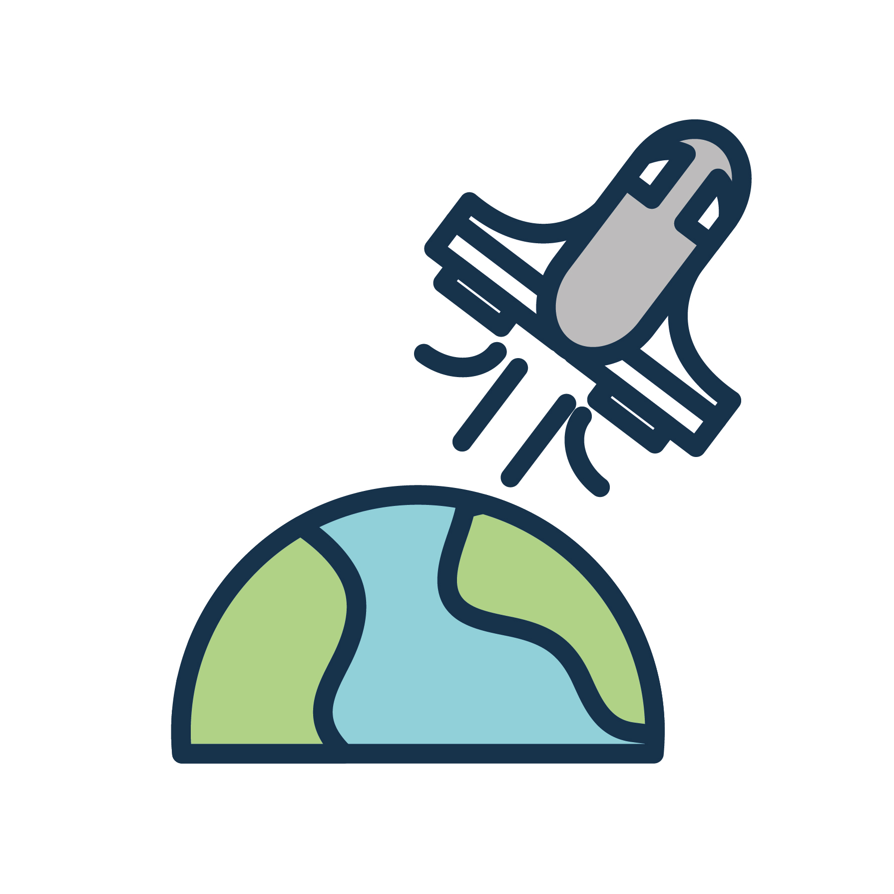

The Solar System
What is the Solar System?
The Solar System is the gravitationally bound system of the Sun and the objects that orbit it, either directly or indirectly. Of those objects that orbit the Sun directly, the largest are the eight planets, with the remainder being smaller objects, the dwarf planets and small Solar System bodies. Of the objects that orbit the Sun indirectly, the moons, two are larger than the smallest planet, Mercury. The Solar System formed 4.6 billion years ago from the gravitational collapse of a giant interstellar molecular cloud. The vast majority of the system's mass is in the Sun, with the majority of the remaining mass contained in Jupiter. The four smaller inner planets, Mercury, Venus, Earth and Mars, are terrestrial planets, being primarily composed of rock and metal. The four outer planets are giant planets, being substantially more massive than the terrestrials. The two largest, Jupiter and Saturn, are gas giants, being composed mainly of hydrogen and helium; the two outermost planets, Uranus and Neptune, are ice giants, being composed mostly of substances with relatively high melting points compared with hydrogen and helium, called volatiles, such as water, ammonia and methane. All eight planets have almost circular orbits that lie within a nearly flat disc called the ecliptic.
Why do we study the Solar System?
We study our solar system for the:
-
To explore the diversity and complexity of the planets, moons, asteroids, comets, and other objects.

To learn about the origin and evolution of our own planet and its place in the universe.
To search for signs of life beyond Earth and understand the conditions that could support it.